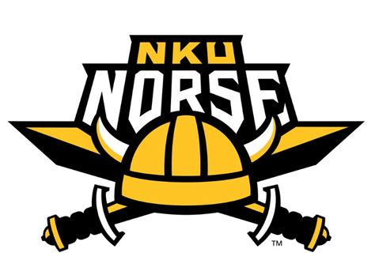
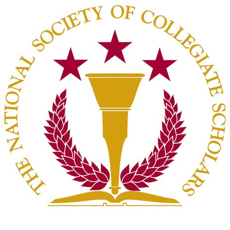

Here is a preview of my academic career:
I'm a current freshman at Northern Kentucky University.
My goal is to earn a BS in Computer Science.

My general education courses have included:
- Socienty and Human Services
- Principles of Informatics
- Introduction to College Writing
- Medical Spanish
- Indroduction to Public Speaking
I'm also current member of the NKU chapter of the National Society of Collegiate Scholars (NSCS).

I graduated high school in 2024. I was homeschooled with the Sonlight cirriculum, which is literature
based, so I read a lot of books for school.
|